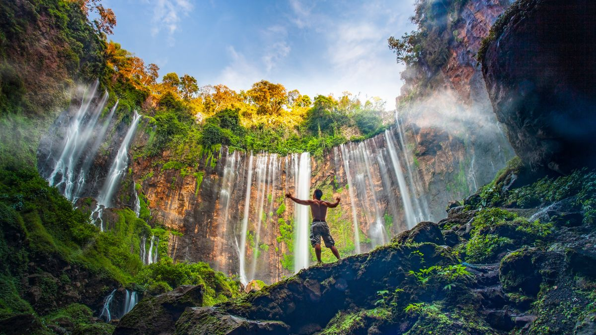

Curug Tumpak Sewu, Lumajang Jawa Tengah.
Air terjun tirai yang megah di antara tebing hijau dan pemandangan memukau.
Let’s go traveling brok!
Jelajahi air terjun megah, danau yang tenang, serta panorama alam Indonesia yang memukau.
Pesan TiketTemukan keindahan alam di setiap perjalanan.
Saksikan keindahan Wisata Alam Indah.